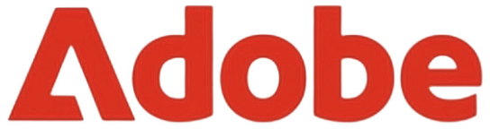
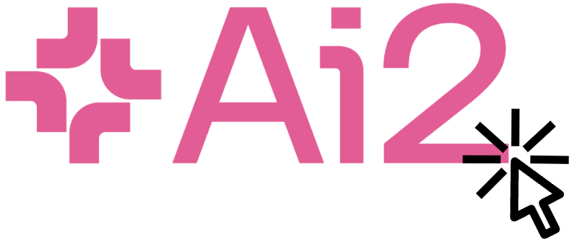
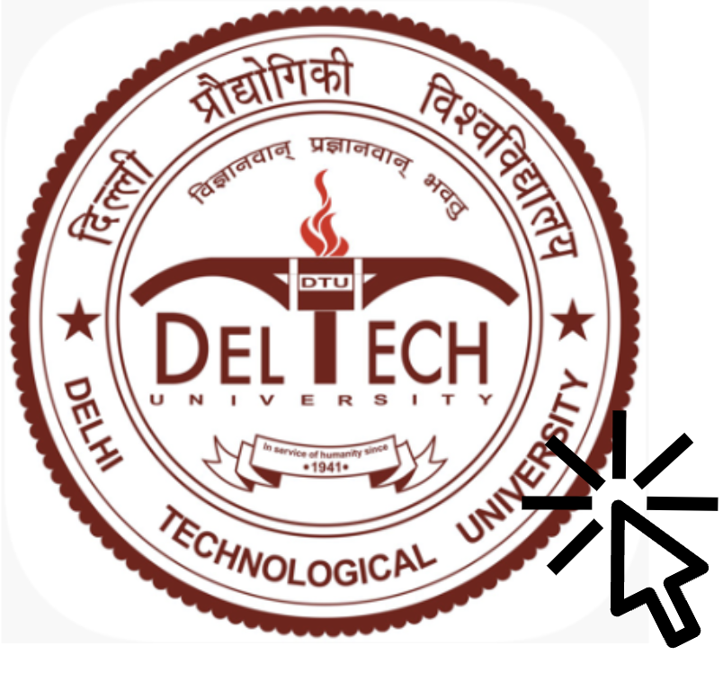

I am a first-year Ph.D. student at the University of Illinois Urbana-Champaign,
advised by Professor Derek Hoiem
and Professor Alexander Schwing.
My research focuses on long-form video understanding and multimodal learning.
I aim to enable machines to learn from multiple data modalities, fostering a
comprehensive, human-like understanding of the dynamic world.
My past research experiences involve collaborations at Adobe Research, Allen Institute
for AI, National University of Singapore, Mila, and Google.
I have also worked in engineering roles at Google and Cadence Design Systems.

Adobe Research
May 2024 - Aug 2024
Developed a method to simultaneously enhance LLMs with generative and representation
learning capabilities
The enhanced LLMs can perform open-ended generation, text
infilling, and token-level and sentence-level representation learning

Allen Institute for AI
Oct 2022 - Dec 2023
Contributed to Unified-IO 2,
an instruction-following model that can parse and generate multimodal data and perform 120+ tasks
Worked on a memory-augmented multimodal encoder for understanding videos ranging from a
few seconds to tens of minutes
National University of Singapore
Apr 2022 - Aug 2022

Delhi Technological University
Apr 2021 - Nov 2021
Leveraged image-based malware binary representations and techniques like ensembling and autoencoding to develop
S-DCNN and
AE-DCNN, CNNs for malware classification
Worked on improving object recognition systems in the presence of adversaries like occlusion and blurriness
Google
May 2020 - Jul 2020
Initiated the development of MuRIL,
a BERT-based multilingual language model for 17 Indian dialects and their transliterated versions
Achieved a 10.42% F1 improvement in sentiment analysis and a 9.87% in named entity recognition for Indian languages
A full list of publications can be seen on my
Google Scholar
author page.
(* denotes equal contribution)

Unified-IO 2: Scaling Autoregressive Multimodal Model with Vision, Language, Audio, and Action
Jiasen Lu*, Christopher Clark*, Sangho Lee*, Zichen Zhang*, Savya Khosla, Ryan Marten, Derek Hoiem, and
Aniruddha Kembhavi
Computer Vision and Pattern Recognition, 2024

MuRIL: Multilingual Representations for Indian Languages
Simran Khanuja, Diksha Bansal*, Sarvesh Mehtani*,
Savya Khosla*, Atreyee Dey, Balaji Gopalan, Dilip Kumar Margam,
Pooja Aggarwal, Rajiv Teja Nagipogu, Shachi Dave, Shruti Gupta,
Subhash Chandra Bose Gali, Vish Subramanian, and Partha Talukdar
arXiv, 2021
Media Coverage:
Economic Times,
Indian Express,
Google AI Blog